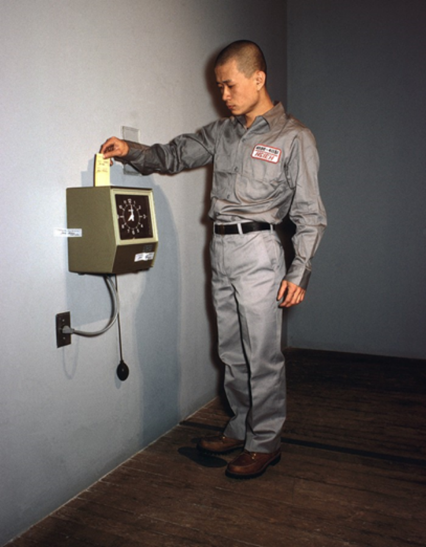

GIP
Exit
"22
Teching hsieh

In dit werk vertrekt Tehching Hsieh
vanuit een verklaring waarin hij
vermeldde dat hij elk uur van
de dag
voor een periode van een jaar een
prikklok zal inslaan. In 1980
installeerde hij in
Manhattan in zijn
atelier een prikklok die hij
vervolgens gebruikte om elk uur te
registreren.
Van 11 April 1980 tot 11
April 1981 heeft hij elke uur een
gaatje geslagen in een stukje papier.
Hij heeft niet langer geslapen dan 50
minuten en ook niet langer dan 50
minuten zijn
appartement verlaten,
op een paar keer na dat hij het
gemist had. Hij heeft een jaar
gekozen
omdat het een zeer
menselijk eenheid is. Onze leeftijd
wordt uitgedrukt in jaren en een hele
omwenteling van de zon duurt ook
een jaar.
Tehching Hsieh (1950) is
een performance
kunstenaar geboren in
taiwan.
Inspi
ratie
one year performance 1978-1979